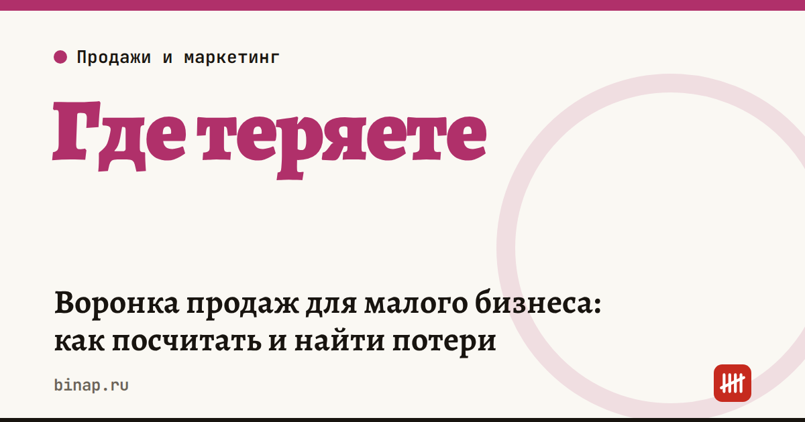

Воронка продаж для малого бизнеса: как посчитать и найти потери

Воронка продаж — это путь клиента от первого касания до оплаты, разложенный на этапы. Посчитайте, сколько людей проходит каждый этап за месяц, и сразу увидите, где теряются деньги: чинить нужно этап с самой низкой конверсией, а не покупать больше рекламы.
Коротко
- Для малого бизнеса хватает 4–5 этапов: обращение → ответ → встреча или расчёт → счёт → оплата.
- Конверсия этапа = сколько перешли на следующий этап ÷ сколько было на этом этапе × 100%.
- Выручка = обращения × конверсия в оплату × средний чек. Каждый множитель — отдельный рычаг.
- Поднять слабый этап обычно дешевле, чем привести больше обращений.
- Считать воронку можно в таблице, CRM для этого не обязательна.
Шаг 1. Выпишите этапы
Этап — это действие клиента, которое можно посчитать. Примеры:
| Бизнес | Этапы воронки |
|---|---|
| Услуги (ремонт, юрист, бухгалтер) | заявка → ответ → консультация → КП → оплата |
| Магазин в соцсетях | сообщение → ответ с ценой → заказ → оплата |
| B2B-поставки | входящий запрос → квалификация → встреча → КП → счёт → оплата |
| Салон, студия | звонок или запись онлайн → запись подтверждена → визит → повторный визит |
Не делайте больше 6 этапов — в маленьком бизнесе цифры станут слишком мелкими, чтобы делать выводы.
Шаг 2. Посчитайте людей на каждом этапе
Возьмите прошлый месяц. Источники: мессенджеры и почта, журнал звонков, таблица заказов, выписка по счёту. Если чего-то не учитывали — начните считать с сегодняшнего дня и вернитесь к воронке через месяц.
Шаг 3. Посчитайте конверсию
Пример (расчёт редакции): студия ремонта, средний чек 120 000 ₽.
| Этап | Человек | Конверсия в следующий этап |
|---|---|---|
| Заявки | 100 | 70% получили ответ |
| Ответ | 70 | 50% дошли до замера |
| Замер | 35 | 60% получили смету |
| Смета | 21 | 38% оплатили |
| Оплата | 8 | — |
Выручка: 8 × 120 000 = 960 000 ₽. Конверсия из заявки в оплату — 8%.
Самое слабое место здесь — первый этап: 30 заявок из 100 остались без ответа. Если отвечать всем, при тех же остальных конверсиях оплат станет 100 × 50% × 60% × 38% ≈ 11, а выручка — около 1,3 млн ₽. Без рубля на рекламу.
Шаг 4. Что делать с каждым этапом
| Слабый этап | Частая причина | Что попробовать |
|---|---|---|
| Заявка → ответ | отвечают через часы или не отвечают вечером | дежурный, автоответ с вопросом, нормы на скорость ответа |
| Ответ → встреча | менеджер сразу называет цену и замолкает | задать 2 вопроса о задаче и предложить следующий шаг с датой |
| Встреча → КП | КП обещают «на днях» | отправлять КП в тот же день, шаблон с вариантами |
| КП → оплата | клиент «думает», никто не перезванивает | касание через 1, 3 и 7 дней, ограниченное по сроку предложение |
| Оплата → повтор | о клиенте забывают после сделки | напоминание через месяц, программа для постоянных |
Почему скорость ответа решает больше, чем цена, — в колонке «Клиентов теряют на первом ответе». Как поставить работу менеджеров — в 5 уроках об отделе продаж.
Как вести воронку дальше
- Раз в неделю заносите цифры по этапам в таблицу.
- Меняйте за раз только один этап — иначе не поймёте, что сработало.
- Через месяц сравните конверсию этапа до и после.
- Когда заявок станет больше 100–150 в месяц, задумайтесь о CRM: она считает воронку сама.
Нейросеть поможет разобрать проигранные сделки и написать скрипты для слабого этапа — готовые запросы в статье «ИИ для малого бизнеса: 10 задач».
Частые вопросы
Какая конверсия считается нормальной? Универсальной нормы нет: она зависит от отрасли, среднего чека и источника заявок. Сравнивайте себя с собой — с прошлым месяцем.
Нужна ли CRM, чтобы считать воронку? Нет. Для начала хватит таблицы с этапами и датами. CRM нужна, когда менеджеров несколько и заявок много.
С какого этапа начинать? С того, где самая низкая конверсия и где исправление стоит дешевле всего. Чаще всего это скорость первого ответа.